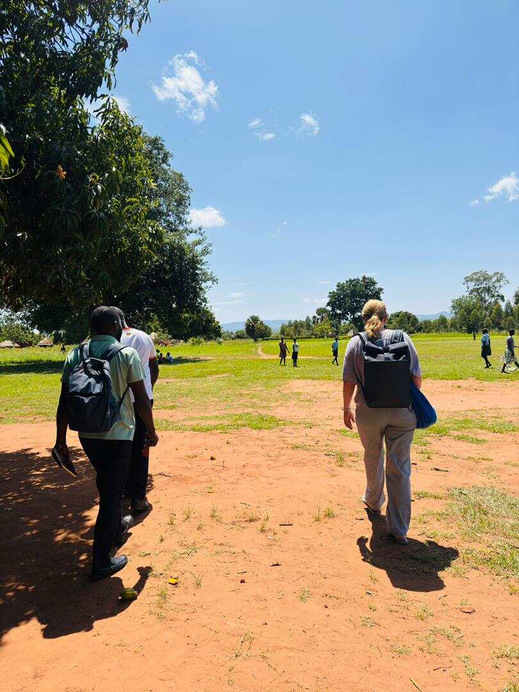
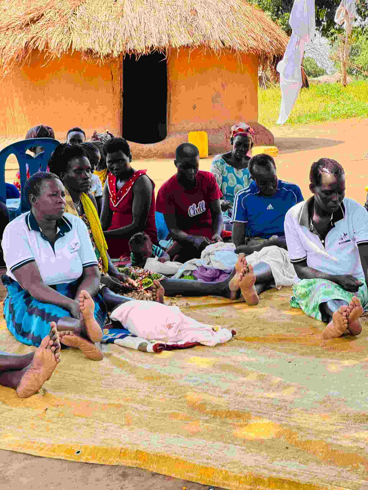
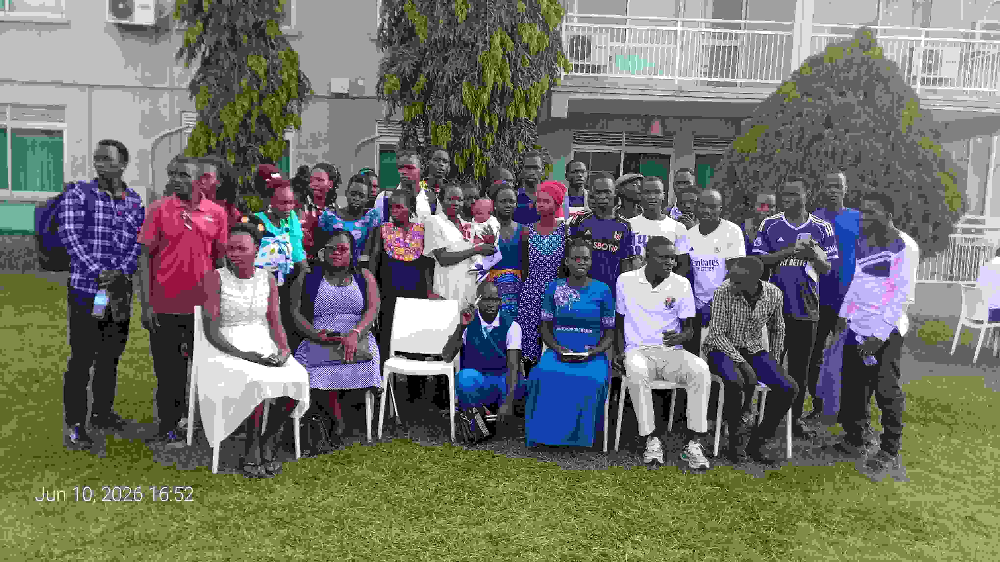
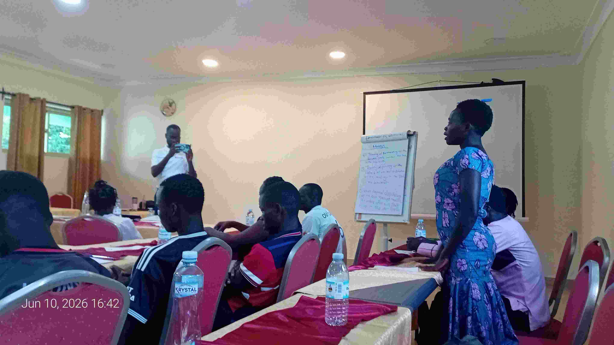

Our Programs & Trips
Interested in joining a program or have questions about upcoming trips?
Contact Us Today →Featured Programs

Community Advocacy Retreat
Duration: 3 Days
Location: Mukono, Uganda
Cost: UGX 150,000 per person
An immersive retreat where community leaders, youth, and advocates come together to learn rights-based approaches, develop advocacy strategies, and build coalitions for lasting social change. Accommodation and meals are included.

Youth Leadership Camp
Duration: 5 Days
Location: Jinja, Uganda
Cost: UGX 200,000 per person
A transformative 5-day camp for young people aged 15–25. Participants engage in leadership training, team building, civic education, and cultural exchange activities along the banks of the Nile. Meals, transport, and accommodation are provided.

Women's Empowerment Exchange
Duration: 2 Days
Location: Masaka, Uganda
Cost: UGX 80,000 per person
A cross-community exchange program connecting women from different districts to share experiences, learn livelihood skills, access financial literacy training, and strengthen peer support networks. Lunch and transport are included.
All Available Programs
| Program | Duration | Location | Group Size | Cost (UGX) | Difficulty |
|---|---|---|---|---|---|
| Community Advocacy Retreat | 3 Days | Mukono | 20–40 | 150,000 | Beginner |
| Youth Leadership Camp | 5 Days | Jinja | 30–60 | 200,000 | Moderate |
| Women's Empowerment Exchange | 2 Days | Masaka | 15–30 | 80,000 | Beginner |
| Health & Well-being Workshop | 1 Day | Kampala | 25–50 | Free | All Levels |
| Community Resilience Training | 4 Days | Mbale | 20–35 | 175,000 | Intermediate |
| Civic Engagement Tour | 2 Days | Entebbe | 15–25 | 100,000 | Beginner |